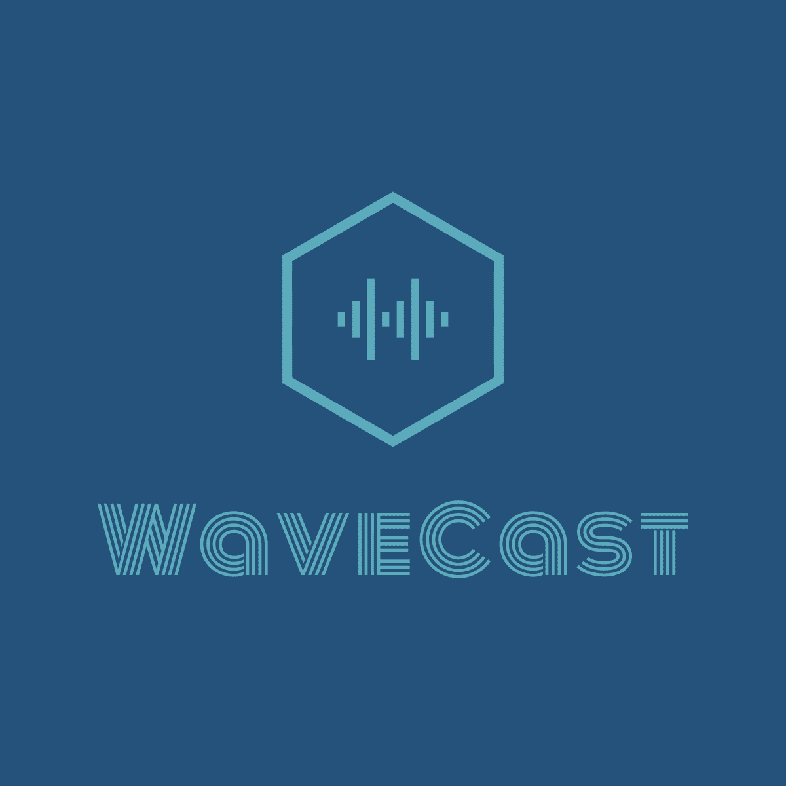

logo de la página

El servicio de wavecast está destinado a la subida y escucha de podcast, similar a ivoox o soundcloud. Una de las características
diferenciales del proyecto es la posibilidad de apoyar a los creadores de contenido mediante microdonaciones o suscripciones a
los canales y/o a la plataforma. Nosotros potenciaremos el contenido semanal de los creadores más pequeños o poco vistos para
tratar de que tengan una mayor visibilidad en nuestra plataforma, siempre y cuando cumplan unos estándares que serán definidos
por el equipo de trabajo.